DEEPVISION / WEBPJ
DeepVision Studio
深度学习可视化学习平台 · 高级 Web 技术课程汇报
项目组成
平台由 Angular 前端、Spring Boot 后端和 Python 计算模块组成，用于完成可交互的深度学习实验。
主要内容
包括前向传播、真实训练、反向传播观察、Checkpoint 对比、单样本推理和多人协作。
项目目标
现有学习方式的问题
- 课件可以展示公式，但不容易看到每一层的 shape 和特征图变化。
- 静态图缺少真实计算，无法直接比较修改参数前后的结果。
- 深度学习术语较多，实验时经常还要另外查找概念。
平台提供的功能
编辑网络调整网络层、参数和样本输入
真实计算使用 Python 和 NumPy 执行前向传播
过程解释查看公式、shape 变化、特征图和助手回答
保存实验登录后保存并恢复实验记录
设计思路把网络编辑、真实计算、结果解释和实验记录放在同一个平台中。
平台功能概览
| 模块 | 主要功能 | 使用技术 | 当前状态 |
|---|---|---|---|
| A 模式 | 网络编辑、样本输入、逐层结果、3D 展示和历史记录 | Angular + Spring Proxy + Python NumPy | 已完成 |
| B 模式 | 数据集管理、模型训练、反向传播观察、实验对比、推理和协作 | Angular + Spring + PyTorch Worker + WebSocket | 已完成 |
| C 模式 | CNN 可解释性展示、卷积层特征图、局部 patch 计算和逐层解释 | Angular + CNN Explainer 资源迁移 | 已完成 |
| D 模式 | Transformer 下一词预测、注意力矩阵、Top-K 结果和 QKV 逐步解释 | Angular + ONNX Runtime + Tokenizer | 已完成 |
| AI 博物馆 | 第一人称 AI 发展史长廊，多人在线参观 | Three.js + WebSocket | 可演示 |
| LLM 助手 | 根据当前实验内容进行问答，支持流式输出 | SSE + 后端 LLM 代理 | 可演示 |
| 教学浮标 | 术语高亮和教学文档跳转 | Angular Directive + Signal | 可演示 |
| E 模式 | MLP 反向传播、分步动画、决策边界和优化器对比 | 纯前端 TS 引擎 | 已完成 |
| F 模式 | RNN 循环神经网络：Tanh RNN + BPTT、时间展开、序列分类 | 纯前端 TS 引擎 | 可演示 |
系统整体架构
BROWSER / ANGULAR
页面交互与可视化
负责页面路由、实验工作台、训练图表、3D 网络、AI 浮窗和教学浮标。
请求与实时推送
HTTP · SSE · WebSocket
SPRING BOOT
业务与接口处理
负责登录鉴权、H2 数据、forward 转发、训练任务、Checkpoint、LLM 和 WebSocket。
计算服务调用
REST 代理 · Python 子进程
PYTHON COMPUTE
模型计算与训练
NumPy 服务负责前向传播，PyTorch worker 负责训练、梯度采集、测试和推理。
浏览器统一访问 Spring；Spring 处理业务和数据；Python 负责模型计算。技术栈与代码结构
FRONTEND
frontend/src/app
├─ core API / Auth
├─ shared simulation / forward / llm / network-3d
├─ modes mode-a / mode-b / mode-c / ...
└─ shell home / teachingBACKEND
backend/spring/src/main/java
├─ auth JWT / user / security integration
├─ forward proxy / records / image storage
├─ training dataset / job / checkpoint / WebSocket
├─ llm chat proxy / SSE
├─ museum WebSocket presence
└─ common CORS / exception / static resourcesCOMPUTE SERVICE
backend
├─ python-forward/app.py NumPy forward HTTP 服务
├─ python-forward/forward_engine.py
└─ python-training/training_worker.py
PyTorch 训练、测试、样本推理与 JSON 事件输出组织方式前端按基础功能、共享功能和实验模式划分，后端按登录、计算、训练和辅助功能划分。
团队分工
| 成员 | 负责内容 | 当前状态 | 主要技术 |
|---|---|---|---|
| 成员 A | 整体框架、A 模式、forward、登录记录、3D、LLM、教学浮标、AI 博物馆、Docker | 已完成 | 数据流、服务分层、可视化、持久化 |
| 成员 B | B 模式前后端、数据集与数据库、训练任务、实验对比、单样本推理、协作聊天室 | 已完成 | PyTorch、任务管理、Checkpoint、WebSocket、可视化 |
| 成员 C | CNN 可解释性、资源迁移与解释器 | 已完成 | CNN explainer、可解释可视化 |
| 成员 D | 反向传播可视化 (E)、RNN 循环神经网络 (F) 和教学术语 | 已完成 | MLP 反向传播、BPTT、决策边界、优化器对比 |
Mode A 前向传播实验
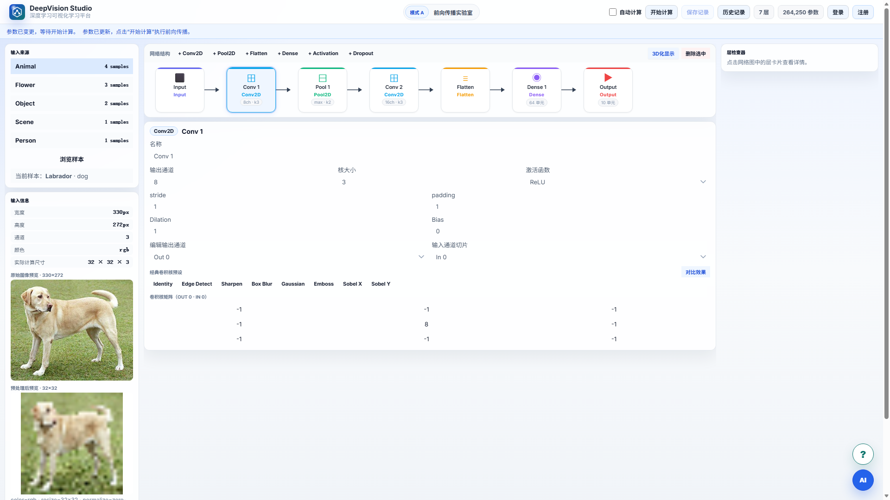
主要功能
- 除了最终分类结果，还会展示输入经过每一层时的变化。
- 操作顺序是：选择样本或图片 → 搭建网络 → 执行 forward → 查看 shape、特征图和 Top-K。
- 计算由 Python NumPy 服务完成，结果可以保存并在之后重新查看。
页面内容
实验工作台支持网络层编辑、样本输入、逐层检查器和卷积核对比。
真实 forward通过后端代理调用 Python 计算服务，返回可解释的逐层计算结果。
历史记录登录后保存实验，之后恢复网络、输入和计算结果。
3D 显示把当前网络结构和结果放到 3D 页面中查看。
Mode A 数据处理流程
数据流
- 用户在 Mode A 中完成样本选择、网络搭建和参数调整。
- 前端把图片和网络结构整理成请求，由 Spring 转发到 Python forward 服务。
- Python 返回各层 shape、特征图、Top-K 和错误信息，前端再进行展示和保存。
- 登录用户可以保存完整实验快照，后续恢复网络、输入和结果状态。
页面能力
层检查器展示当前层输入输出 shape、公式说明、统计值和特征图。
输出结果在同一页面查看预测排名、层级形状变化和异常提示。
实验快照保存网络结构、连接关系、计算结果和输入图片信息。
结果复用同一份结果可以用于层检查器、历史记录、助手和 3D 页面。
处理流程前端负责编辑和展示，Spring 负责转发与保存，Python 负责实际计算。
三维网络结构展示
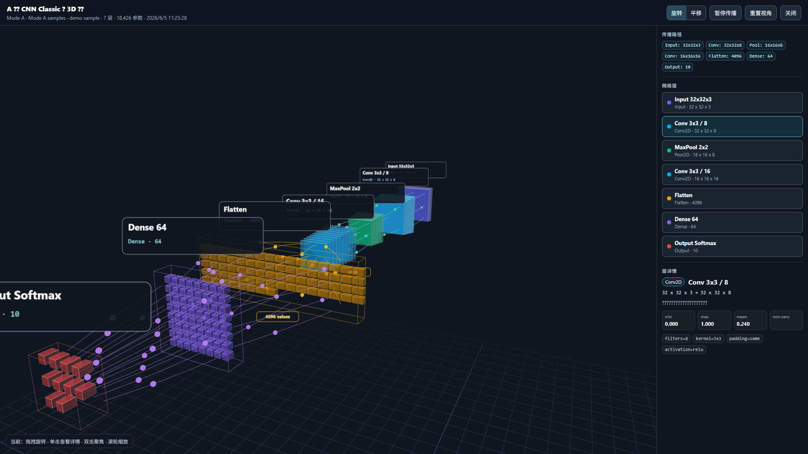
展示内容
- 把网络层、连接关系、shape 变化和输出结果放到可旋转的三维场景中。
- 3D 页面直接读取 Mode A 已经生成的快照，不会重新执行 forward。
- 用户可以从不同角度观察网络结构和层与层之间的连接。
结构呈现
页面通过层节点、连接线、shape 标记和结果摘要组成三维网络。
教学文档与术语检索
主要功能
- 教学文档集中整理平台中的术语、实验概念和相关知识点。
- 右下角浮标可以开启术语高亮，点击后跳转到对应文档。
- 卷积、池化、全连接、softmax 和前向传播等概念都可以直接查询。
界面组成
文档目录按概念分类组织，方便快速定位术语。
术语条目每个条目包含定义、解释和相关实验场景。
浮标入口在实验页面中直接打开，不需要返回首页查找。
术语高亮把页面中的关键概念变成可点击的学习入口。
使用方式用户在实验页面中就能打开相关术语说明，不需要另外查找资料。
实验智能助手
主要功能
- 智能助手放在页面右下角，实验过程中可以随时打开。
- 提问时可以带上当前网络、选中层、shape 变化和预测结果。
- 回答采用流式输出，可以边生成边查看。
界面组成
AI 浮窗包含消息列表、输入框、上下文开关和快捷问题。
实验上下文把当前页面状态带入回答，使解释贴近正在观察的结果。
快捷提问围绕层作用、shape 变化和结果解释提供常用问题。
后端调用模型请求统一通过后端发送，前端负责展示消息。
回答内容助手可以根据当前实验状态解释网络层、shape 变化和预测结果。
AI 发展史博物馆
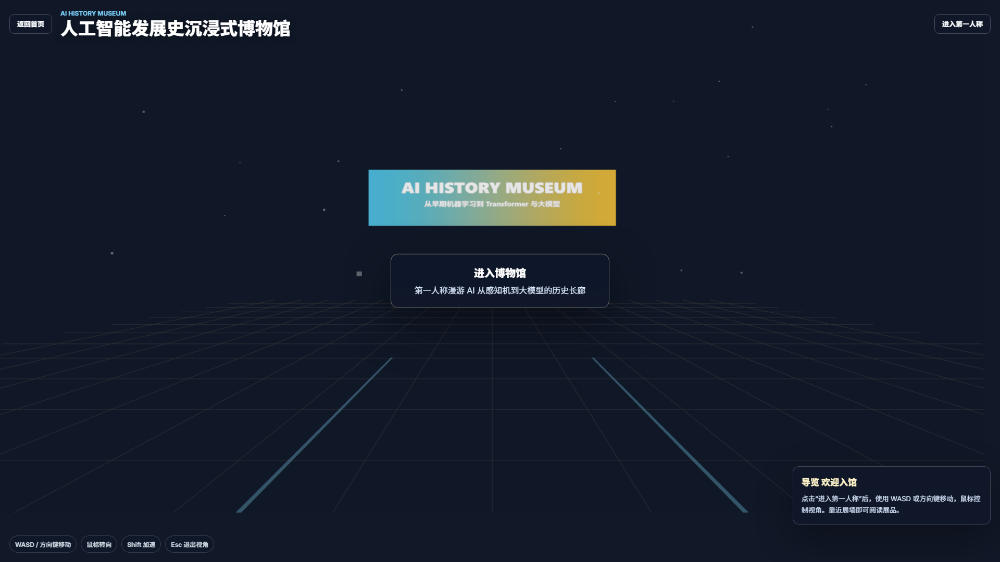
主要功能
- 用户可以用第一人称视角在长廊中浏览 AI 发展历史。
- 不同阶段的事件和人物以 3D 展品的形式放在展馆中。
- 多个用户可以同时进入展馆，并看到彼此的位置。
页面组成
展馆包括里程碑展品、移动控制、展品详情和在线用户位置同步。
Mode B 模型训练工作台
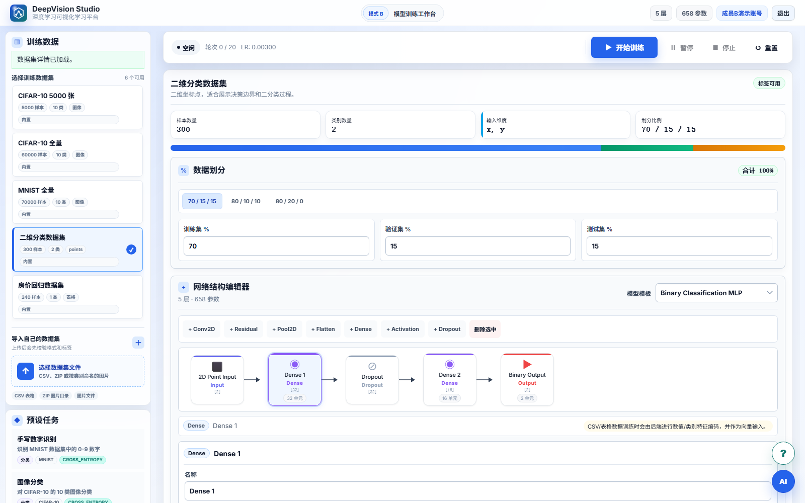
主要功能
- 按照“选择数据 → 搭建网络 → 设置参数 → 开始训练 → 测试并保存”的顺序操作。
- 支持图像、CSV、二维点和回归数据，并分别处理表格和图像的输入维度。
- 可以添加 Dense、Conv2D、Pool、Dropout、Residual 等网络层，训练前会检查维度和输出类别。
页面分区
左侧选择或上传数据集，并查看数据预览。
中间编辑网络、设置超参数并查看训练状态。
其他页面实验对比、单样本推理和训练聊天室。
训练任务执行流程
01Angular 提交数据集、网络结构和超参数
02Spring 创建任务目录，写入 request.json
03Spring 启动 Python worker
04Python 持续输出训练事件
05Spring 推送进度并保存 checkpoint
为什么这样做
- 每次训练单独启动一个 Python 子进程，任务结束后进程也会退出。
- request.json 保存本次训练配置，控制文件处理暂停、继续和停止。
- Python 每次输出一条 JSON 事件，Spring 读到后马上推送给前端。
job.writeRequest(); // 保存本次训练配置
writeControl(job, "running");
Process process = new ProcessBuilder(
pythonExecutable, "-B", workerScript.toString(),
"--request", job.requestFile().toString()
).redirectErrorStream(true).start();
// 两个后台任务分别读取事件并等待进程退出
executor.submit(() -> readWorkerOutput(job));
executor.submit(() -> waitForWorkerExit(job));训练过程实时展示
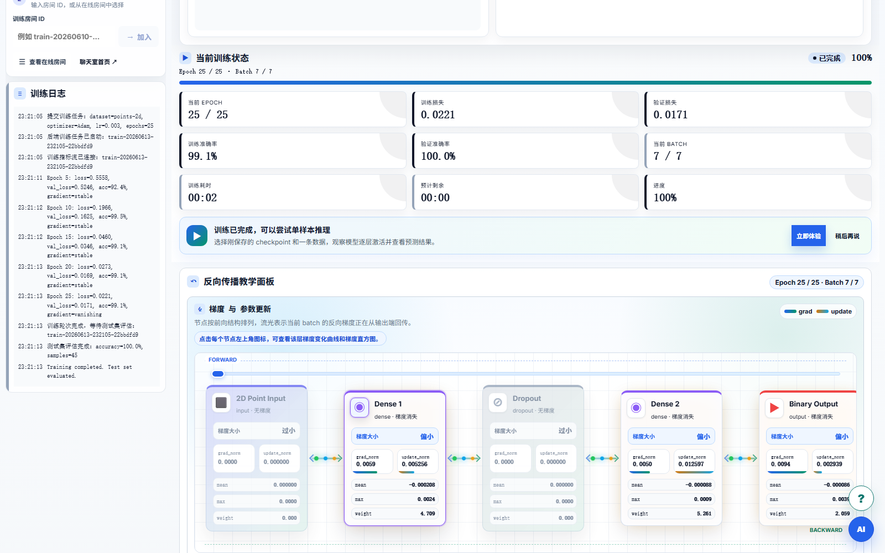
这些数据从哪里来
before = snapshot_trainable_parameters(model)
loss.backward() # PyTorch 计算真实梯度
stats = collect_layer_backprop_stats(model, before)
optimizer.step() # 更新参数
apply_update_norms(stats, model, before)
# 输出给 Spring，再由 WebSocket 推送到浏览器
emit(build_backprop_event(
job_id, epoch, total_epochs,
batch_index, total_batches,
config, "optimizer_step",
float(loss.detach().cpu()), lr,
logits, y, stats
))页面会显示
- 当前 epoch、batch、loss、accuracy、耗时和训练进度。
- 每层的 grad norm、update norm、权重大小和梯度等级。
- 点击节点后，还能查看变化曲线和梯度直方图。
网络层梯度分析
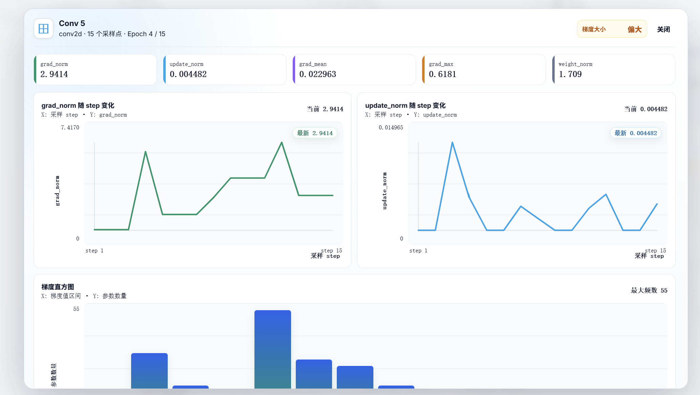
这些数值怎么看
- grad_norm 是这一层的总体梯度大小，可以用来发现梯度过小或过大。
- update_norm 是参数实际改变的大小，可以结合梯度判断学习率是否合适。
- grad_mean / grad_max 分别看平均值和最大值，weight_norm 反映权重整体大小。
- 上面两条曲线看随 step 的变化，下面的直方图看当前梯度分布。
曲线数据怎么保存
// 每次收到真实 backprop 事件，按层记录一个采样点
current.push({
step: ++backpropHistoryStep,
gradNorm: layer.gradNorm,
updateNorm: layer.updateNorm,
gradMean: layer.gradMean,
gradMax: layer.gradMax,
weightNorm: layer.weightNorm,
histogram: layer.gradHistogram ?? []
});
// 限制历史长度，避免长时间训练持续占用内存
backpropLayerHistory[layer.layerId] =
current.slice(-80);数据集与训练结果存储
上传数据时会做什么
| CSV | 用户选择标签列和类别数，系统检查空标签、列数和特征格式。 |
| 图像 ZIP | 按照文件夹识别类别，并忽略 __MACOSX、._ 等系统文件。 |
| 用户权限 | 内置数据集公开；上传的数据集只能由上传者查看和删除。 |
| 数据预览 | 图片按类别抽样，CSV 直接展示原始字段。 |
分别保存在哪里
磁盘文件原始数据、任务目录、配置文件和 checkpoint.pt。
H2 数据库用户归属、网络结构、超参数、指标历史和测试结果。
保存 Checkpoint 的代码
if ("test_result".equals(type)
&& !job.checkpointSaved()) {
saveCheckpoint(job, node);
}
// .pt 保存模型权重，便于 PyTorch 重新加载
String checkpointPath = job.checkpointFile().toString();
// H2 保存可检索和可对比的结构化元信息
new TrainingCheckpoint(
user, dataset.name(), job.jobId(),
checkpointPath,
layersJson, configJson, splitJson,
testResultJson, metricHistoryJson,
describeNetwork(job.request().layers()),
job.status(), job.epoch(), job.totalEpochs()
);权重文件保存在磁盘，数据库只记录路径和训练信息，查询起来更方便。
Checkpoint 测试集评估
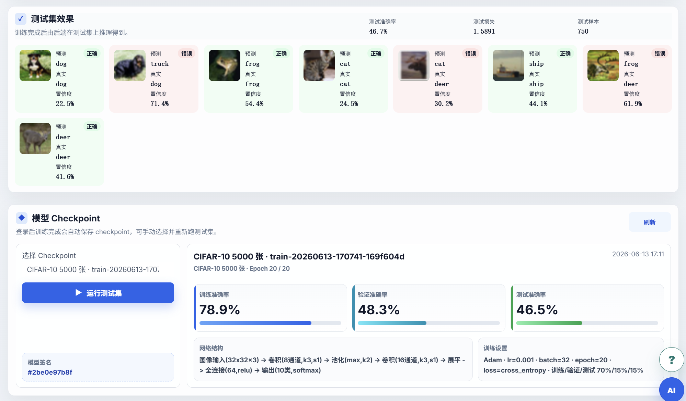
操作过程
- 用户从自己的历史训练记录中选择一个 Checkpoint。
- Spring 检查用户权限，并读取原来的数据集、网络结构和权重路径。
- Python 恢复模型，在原来的测试集上重新执行推理。
- 页面展示 loss、accuracy、样本数，以及部分样本的预测结果。
checkpoint = torch.load(checkpoint_file)
model = build_model(layers, sample_x, class_count)
model.load_state_dict(checkpoint["modelStateDict"])
# 测试阶段不计算梯度，也不更新任何参数
test_loss, test_accuracy = evaluate(
model, test_loader, criterion, device
)
emit({
"type": "test_result",
"testLoss": round(test_loss, 4),
"testAccuracy": round(test_accuracy, 4),
"samples": collect_prediction_samples(...)
})历史训练实验对比
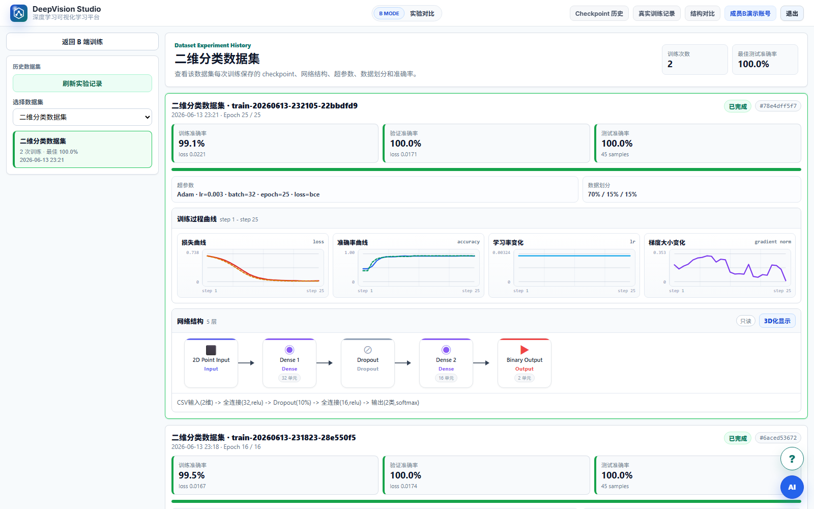
可以比较哪些内容
- 左侧按数据集整理当前用户的历史 Checkpoint，并标出最好结果。
- 每次训练都能看到 train/val/test 指标、数据划分和超参数。
- 曲线包括 loss、accuracy、learning rate 和 gradient norm。
- 点击网络节点可以查看层参数，也可以打开 3D 网络结构。
- 未完成或异常结束的训练会单独标记。
后端返回的数据
GET /api/training/checkpoints?datasetId=...
TrainingCheckpointSummary {
layers, config, split, metricHistory,
trainLoss, valAccuracy, testAccuracy,
status, epoch, totalEpochs
}单样本逐层推理
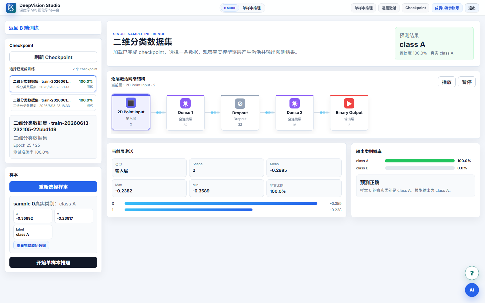
使用步骤
- 先选择当前用户已经训练完成的 Checkpoint。
- 再从对应数据集中选择一条样本，样本列表按需加载。
- 图片直接预览，CSV 展示原始字段和完整详情。
- 后端加载 .pt 权重，返回预测结果和每层 activation。
model.load_state_dict(state)
model.eval()
with torch.no_grad():
# forward 同时收集各层输出
logits, activations = infer_with_activations(
model, sample_x.to(device)
)
emit({
"type": "single_inference",
"prediction": build_prediction(logits),
"activations": activations
})多人训练协作
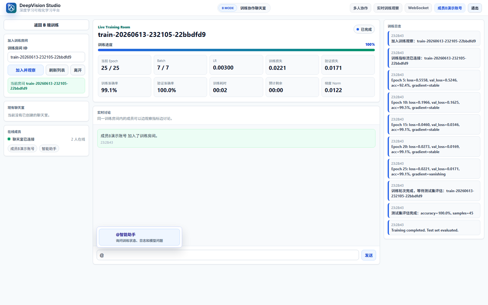
聊天室怎么工作
- 房主根据当前训练任务创建房间，其他用户只能加入已有房间。
- 聊天消息和训练数据分开传输，互相不会影响。
- 输入“@”可以选择智能助手，并结合当前训练状态进行提问。
- 最后一名用户离开后，房间会自动删除。
// 不允许通过“加入”隐式创建不存在的房间
if (!createRoom && !rooms.containsKey(jobId)) {
session.close(CloseStatus.BAD_DATA
.withReason("Training chat room does not exist."));
}
// 最后一位成员离开时释放内存房间
room.sessions.remove(session);
if (room.sessions.isEmpty()) {
rooms.remove(participant.jobId());
}成员 C 模块：Mode C 界面与教学目标
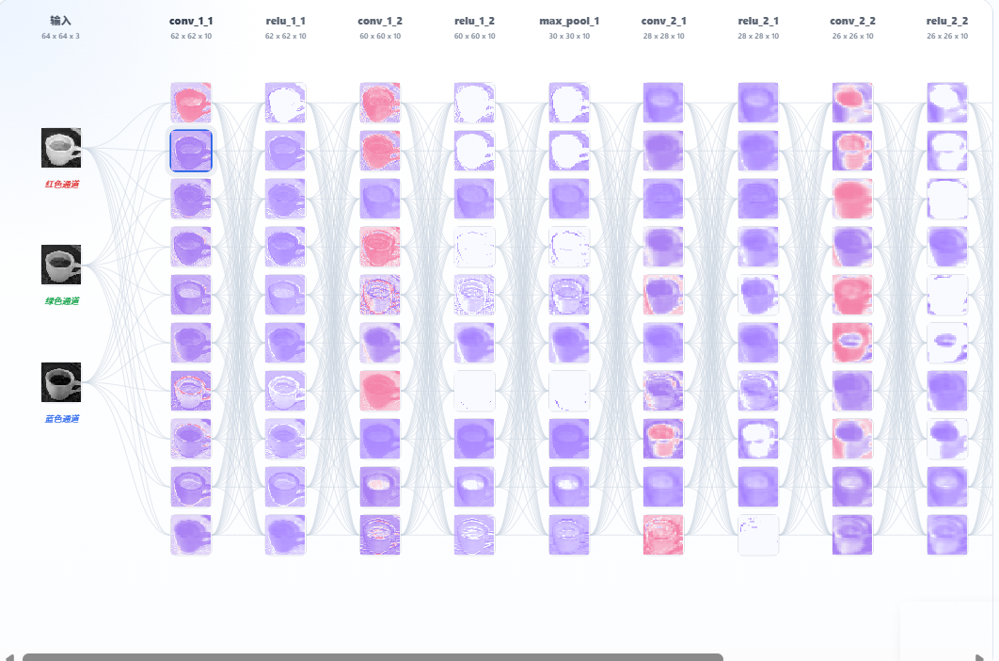
模块定位
- Mode C 面向 CNN 教学解释，不只展示预测类别，而是重点解释卷积网络内部的特征提取过程。
- 页面主线是：输入样例 → 网络拓扑 → 层级激活 → 局部卷积过程 → 输出层与 Grad-CAM 解释。
- 最终目标不是“复刻外部网站”，而是把解释器纳入平台统一架构，成为可维护、可扩展的 Angular 模块。
当前可演示能力
Overview重建了层级拓扑、输入样例、Top-5 概率和输出层解释入口。
Intermediate卷积层支持 patch、kernel、product、按通道累加的逐步教学演示。
非线性层ReLU 和 Pool 层支持随鼠标聚焦到对应位置，解释逐格映射关系。
扩展能力已接入 AI 助手、教学问号入口，并完成 Grad-CAM 可演示能力接入。
成员 C 模块：重构路径与工程难点
重构路径
- 先以嵌入方式验证 CNN Explainer 可在平台内运行，再逐步拆掉外部依赖。
- 从 Overview 开始重建 Angular 原生骨架，再逐层补回卷积、ReLU、池化和输出层的解释视图。
- 把用户状态、AI 助手、教学入口和平台统一样式接进 Mode C，完成模块化收口。
工程难点
- 原项目是 Svelte 加静态资源驱动，无法直接复用为 Angular 组件，只能按功能拆解后重建。
- 需要把总览拓扑和局部教学弹层解耦，同时保持真实推理数据和页面交互同步。
- 卷积层演示不是静态插图，而是基于真实通道、真实 kernel 和真实输出位置组织逐步动画。
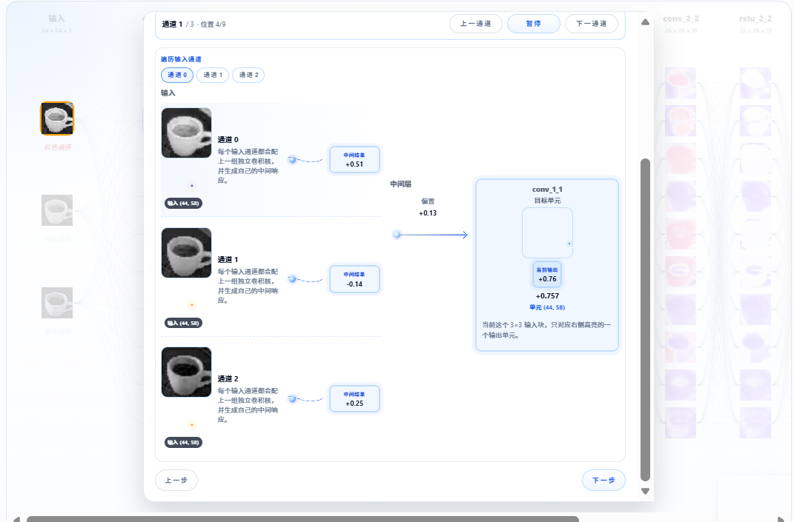
模块价值
- 这部分工作的价值不是"把别人项目嵌进来"，而是把外部解释器改造成平台内统一架构下的教学组件。
- Mode C 现在既有可视化总览，也能下钻到单层、单通道、单 patch 的局部计算过程。
- 它和 Mode A、Mode D 共用用户体系、教学入口和 AI 辅助能力，体现了平台化复用而不是单页 demo。
成员 D 模块：Mode D 界面与解释主线
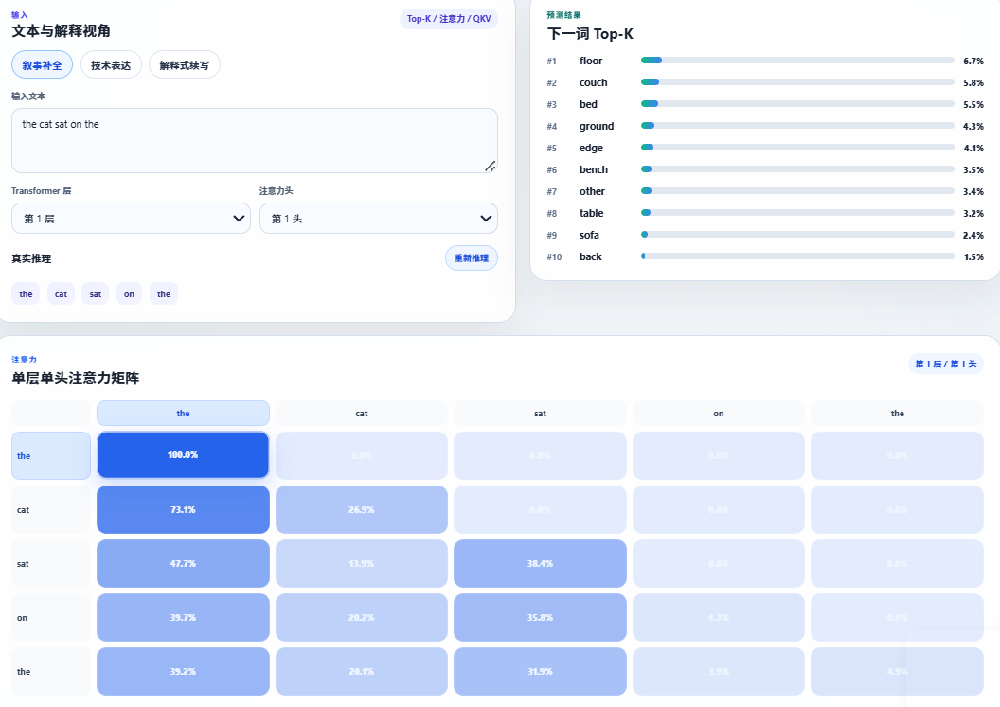
模块定位
- Mode D 面向 Transformer 教学，不做大模型训练，而是聚焦"下一词预测为什么这样产生"的解释链路。
- 页面主线是：输入文本 → token 序列 → Top-K 候选词 → 注意力矩阵 → QKV 逐步可视化。
- 相比只给出一张 attention heatmap，当前版本更强调把 Query、Key、Value 与最终输出之间的关系讲清楚。
当前可演示能力
推理链浏览器端 Transformer 运行时已打通，能够取到 token、logits 和 attention 张量。
可视化支持 Top-K 概率展示、层/头切换、注意力矩阵观察和自动解释报告。
QKV 教学补齐了 Query × Key、缩放、softmax、Value 汇入输出的逐步演示。
平台接入已同步接入登录状态、AI 助手、教学问号入口和静态资源外置方案。
成员 D 模块：QKV 教学与工程实现
QKV 教学结构
- 不是只画出注意力矩阵，而是把 Query × Key、缩放、softmax、Value 汇入输出的链路逐步展开。
- 让用户能把"某个格子为什么亮"和"它最终如何影响输出 token"联系起来理解。
- 这种设计更适合课程答辩，因为它既能讲公式，也能讲交互和最终效果。
工程难点
- 浏览器端 Transformer 运行时需要处理 tokenizer、ONNX Runtime、注意力张量提取和静态资源分发问题。
- 教学可视化不等于直接把张量打印出来，还需要把高维 attention 和 QKV 过程压缩成人能看懂的交互界面。
- 资源较大，因此又做了"源码保留、模型资源单独同步"的改造，降低仓库体积和协作成本。
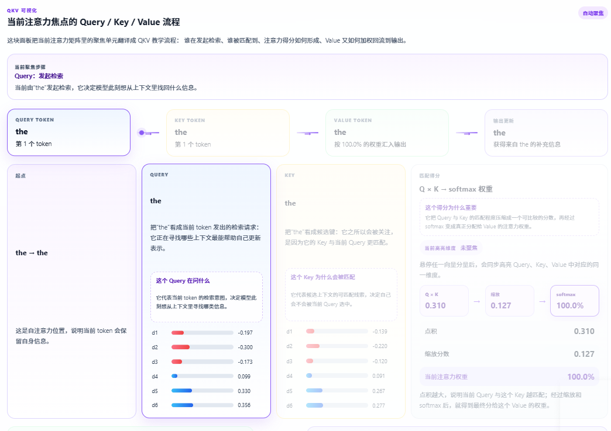
模块价值
- Mode D 的核心贡献是把 Transformer 的预测结果与内部依据放到同一页面里，用教学化方式串起来。
- 不是只演示 attention matrix，而是把 Top-K、当前聚焦单元和 QKV 信息流一起解释。
- 这一模块也复用了平台统一的 AI 与教学体系，说明平台不仅能承载 CNN，也能扩展到 Transformer 解释场景。
模式 E：反向传播引擎与子步骤动画
纯前端 MLP 引擎（零依赖）
- 手写矩阵运算：dot、transpose、hadamard、softmax — 无任何数值库依赖
- 完整实现 Dense 层、ReLU/Sigmoid/Tanh 激活函数的正向和反向传播
- CrossEntropy / MSE 损失 + Softmax 合并梯度优化
- SGD / Momentum / Adam 三种优化器，每种都有独立的动量/二阶矩状态
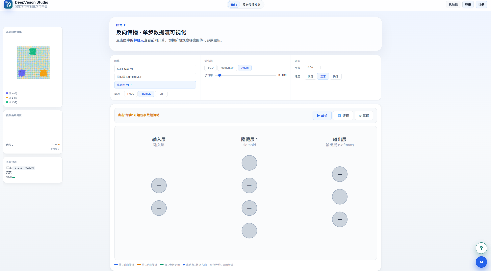
逐层子步骤动画状态机
idle → forward-0-1 → forward-1-2 → ... → loss
→ backward-2-1 → backward-1-0
→ update-1 → update-2 → done- 每个子步骤手动推进（用户点击"继续"），进度条实时显示
- 蓝色脉冲 = 前向数据流、橙色脉冲 = 反向梯度流、绿色脉冲 = 参数更新
- 流动光点沿权重边线动画移动，直观展示数据传递方向
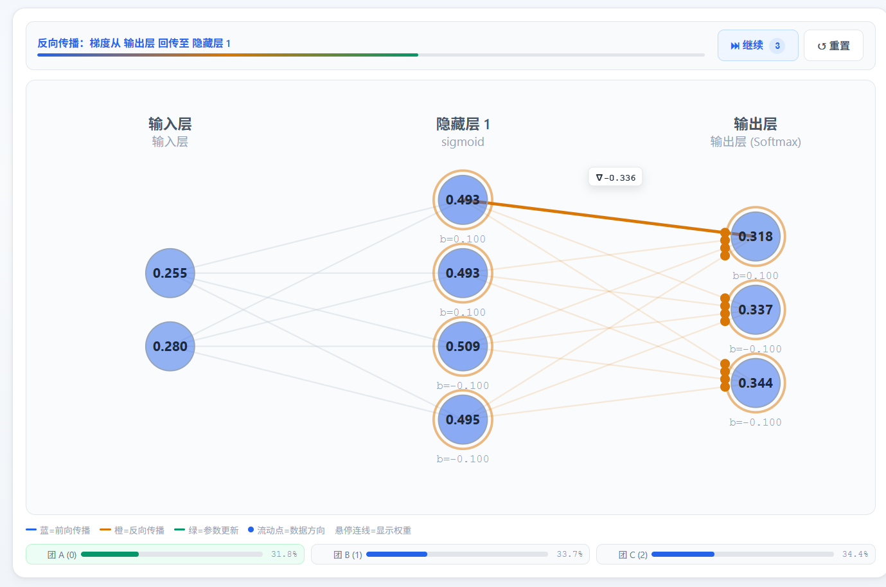
教学价值不是瞬间跳过训练过程，而是把每一步拆成逐层可视化的教学演示，让"反向传播"四个字变成能看到的动画。
模式 E：神经元连线图与决策边界
神经元权重连线图
- SVG 绘制每层神经元节点 + 层间全连接权重边，连线颜色=阶段，粗细=幅度
- 点击神经元：显示选中高亮环 + 详情面板列出该神经元所有入边/出边的权重和偏置
- 悬停连线：弹出白色浮层显示权重值 / 梯度值 / 变化前后的数值
- 子步骤动画时当前计算的层对有彩色外圈高亮标注
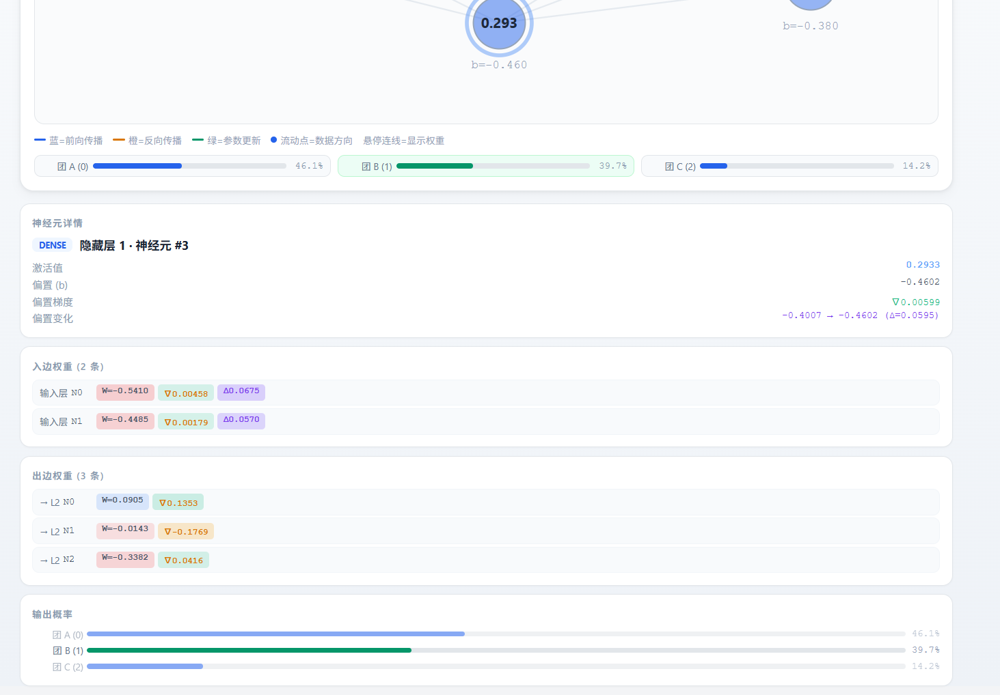
决策边界与图表系统
- 50×50 网格实时计算分类结果，半透明色块叠加在散点图上
- 每 25 步更新，数据点坐标根据实际范围动态映射（解决溢出问题）
- 左侧浮层面板：数据集散点图 + 损失曲线对比 + 当前预测
- 点击图表弹出居中放大弹窗（支持曲线单条删除）
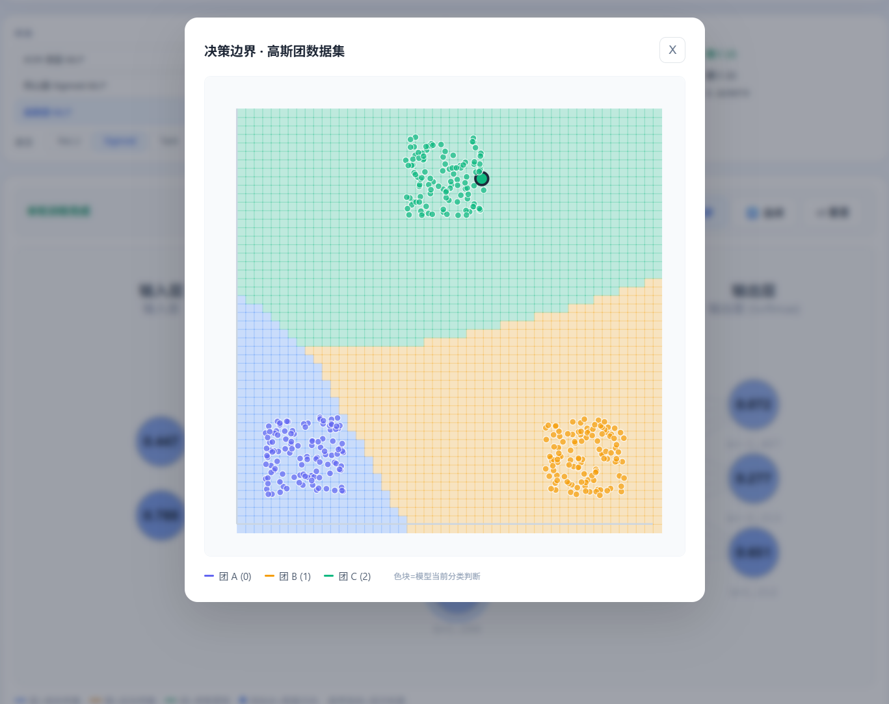
交互闭环点击神经元 → 详情面板列出权重 → 悬停连线 → 看到具体数值 → 选网络调参数 → 观察决策边界变化。
模式 E：损失曲线对比
优化器 / 激活函数对比
- 跑完指定步数自动保存平滑平均损失曲线，标签标注优化器+激活函数组合
- 可对比不同优化器（SGD/Momentum/Adam）和不同激活函数（ReLU/Sigmoid/Tanh）的收敛效果
- 8 色调色板自动分配、颜色不重复、支持单条删除
- 灰色虚线=单步原始损失、彩色实线=不同配置的平滑平均损失
- 曲线自动标注最终准确率，点击弹出居中放大视图
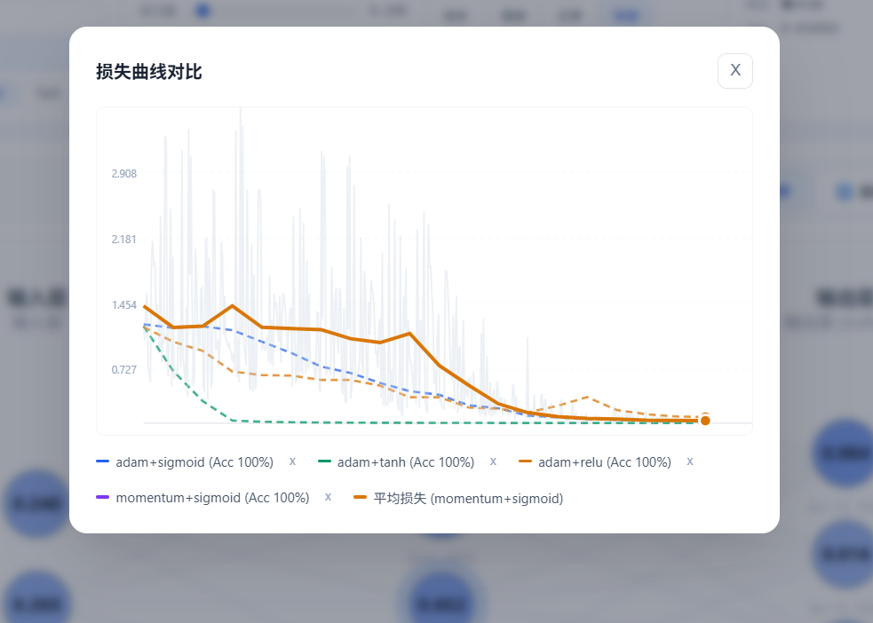
控制面板
- 三个预设网络可切换（XOR/同心圆/高斯团）
- 激活函数：ReLU / Sigmoid / Tanh 一键切换
- 优化器：SGD / Momentum / Adam，均挂载教学术语高亮
- 学习率滑块 + 训练步数 + 播放速度 全部可调
- 12 个教学术语接入共享教学文档，点击"?"即可跳转
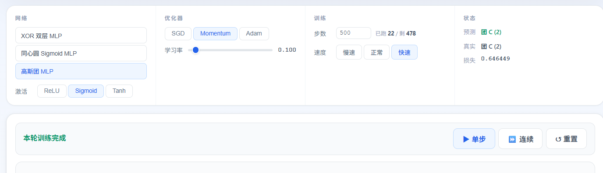
对比实验同一数据集 → 切优化器跑一轮 → 自动保存曲线 → 切激活函数再跑 → 多条曲线叠加对比，直观感受不同配置的收敛差异。
模式 F：RNN 引擎、数据集与时间展开
RNN 引擎与数据集
- 纯 TypeScript 实现 Tanh RNN + BPTT，手动管理 W_xh / W_hh / W_hy 权重矩阵
- 前向：h_t = tanh(W_xh·x_t + W_hh·h_{t-1} + b_h)，最后步 softmax 分类
- BPTT 从最后步沿时间轴回传，累积各步对三个权重矩阵的梯度
- SGD / Momentum / Adam 可切换
三个序列分类任务
| 数据集 | 任务 |
|---|---|
| 延迟记忆 | 记住第一步 bit，延迟 3 步后分类 |
| XOR 记忆 | 前两步各给 bit，判断是否相同 |
| 交替检测 | 检测前两步是否交替变化 |
时间展开可视化
- 每个时间步一个 Cell 方框，箭头串联隐状态传递路径
- 隐状态条形图：蓝=正向激活、红=负向激活
- 每个 Cell 标注 softmax 输出概率分布
- 控制面板：预设切换 + 优化器 + 学习率 + 步数/速度调节
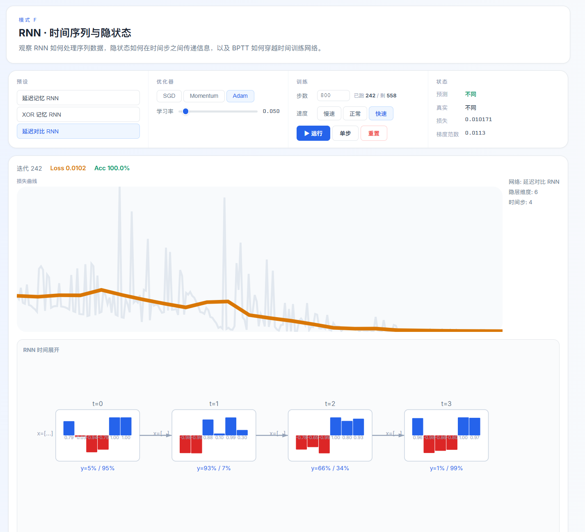
核心价值手写 RNN 前向/反向 + 时间展开可视化 — 让"记忆"变成隐状态在时间步之间传递的数值。
模式 F：权重矩阵、隐状态与训练监控
详情面板
- 权重矩阵形状一览：W_xh、W_hh、W_hy 及各偏置向量的维度
- 梯度范数实时显示，颜色深浅反映梯度健康程度
- 隐状态向量逐时间步展开：每个维度以彩色条形图展示正/负激活
- 每时间步输出概率分布：各分类的 softmax 概率百分比
训练监控
- 单步 / 连续训练模式可选，连续模式到达设定步数自动停止
- 实时损失曲线 + 整体准确率每 25 步评估一次
- 当前迭代状态：预测类别、真实类别、损失值
- 三个预设数据集各 200 个 4 步序列样本，切换预设自动重置
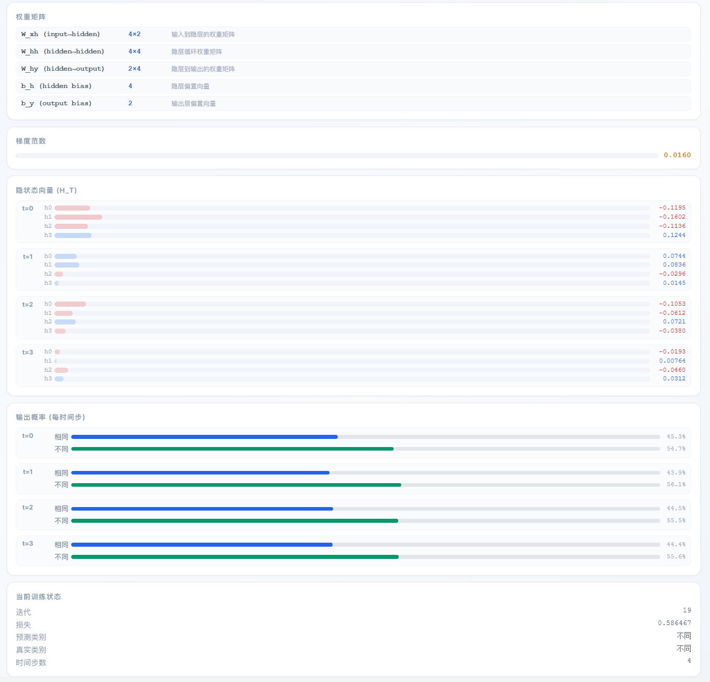
教学闭环看时间展开图理解架构 → 看详情面板追踪数据流动 → 看损失曲线监控训练。
DEEPVISION / WEBPJ
谢谢
DeepVision Studio 课程项目汇报